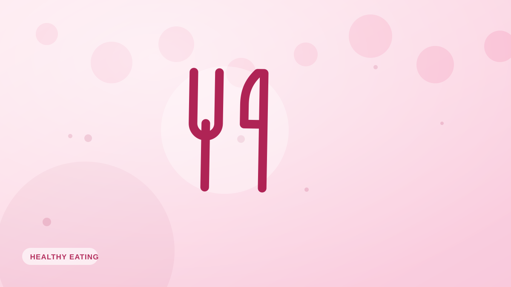

Comer fuera sin cargarte la dieta
>Los restaurantes no tienen por qué descarrilar tus objetivos. Estrategias sencillas para disfrutar comiendo fuera sin salirte demasiado de tus calorías.

Comer en compañía es parte de la vida, y ningún plan que prohíba los restaurantes va a durar. El objetivo no es evitar comer fuera, sino hacerlo de una forma que encaje con tus metas la mayor parte del tiempo. Unos pocos hábitos fiables dan mucho de sí.
Decide antes de llegar
Casi todos los restaurantes tienen la carta en internet. Elegir qué vas a pedir antes de tener hambre y de estar rodeado de olores tentadores elimina el factor impulso. Muchas cadenas indican además las calorías, lo que lo pone todavía más fácil.
Ancla la comida en proteína y verdura
Elige un plato construido alrededor de una proteína magra y verduras, con una ración controlada de carbohidratos. A la plancha, al horno o asado gana a frito o con nata. Pide las salsas y los aliños aparte para controlar la cantidad.
Gestiona los extras
- La cesta de pan: disfruta un trozo con atención o pide que no la traigan.
- Las bebidas: las calorías líquidas suman rápido; alterna el alcohol con agua.
- Las raciones: en un restaurante son grandes; llévate la mitad a casa o compártela.
La mentalidad 80/20
Una comida nunca decide tu progreso: lo decide la constancia a lo largo de semanas. Si es una ocasión especial, disfrútala del todo y sigue adelante sin culpa. Los problemas vienen de la frecuencia, no del capricho puntual.
Estima y registra
No vas a ser exacto, pero una estimación razonable te mantiene consciente. Fotografiar el plato con Fotocal te da una cifra aproximada de la comida, así que puedes ajustar el resto del día si te apetece.
Ideas clave
- Mira la carta y decide antes de llegar con hambre.
- Construye la comida sobre proteína y verdura; las salsas aparte.
- Vigila el pan, las bebidas y las raciones enormes.
- Una comida no te descarrila: lo que cuenta es la constancia.